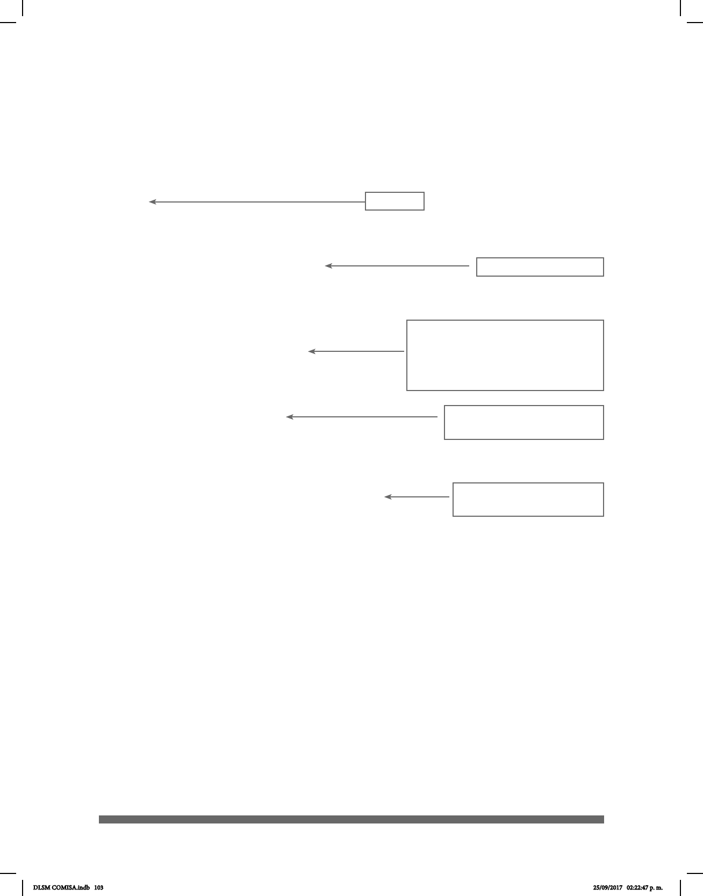

103
Debido a que en la mayoría de los casos los señantes son diestros, por convención se
estableció a la mano derecha como la mano dominante (MD). Es así como aparecen
redactadas las descripciones de las señas, aunque si algún usuario preere utilizar la
mano izquierda como dominante sólo tendrá que adaptar la información y la imagen.
Cada descripción consta de cinco elementos:
Cacerola
Seña: SS
Conguración: Seña que pasa de C.1 a S.1
Ubicación: De la cintura al pecho.
Orientación: Las palmas están una frente a
otra.
Movimiento: Recto.
Entrada
Descripción de la seña
GLOSA: El uso de la seña en un cier-
to contexto. Este uso está ejempli-
cado con una oración escrita en ma-
yúsculas respetando la gramática de
la LSM.
ABUELA CACEROLA ARROZ COCINAR
Mi abuela cocinó arroz en la cacerola
Denición:
Cacerola: sust. f. Recipiente metálico, de forma cilíndrica y
no muy alto, con asas y tapa, utilizado para cocinar. DEM
Traducción íntegra de LSM a
español.
La denición corresponde a
la equivalencia en español.
Cómo señar: articulación de las señas
La articulación de cada seña se describe siguiendo el análisis de los rasgos distintivos,
como uso del espacio del señante, uso de las manos, conguración manual, ubicación,
orientación de la palma de las manos, dirección y movimiento, así como la expresión
facial que forman la estructura de una seña especíca.
DLSM COMISA.indb 103 25/09/2017 02:22:47 p. m.